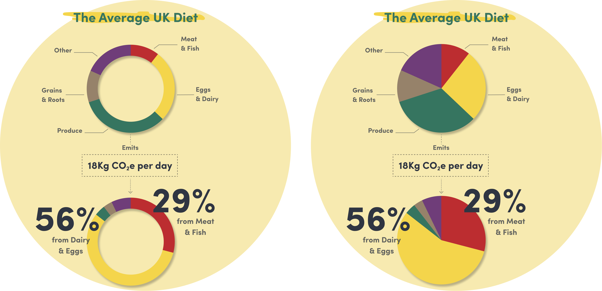
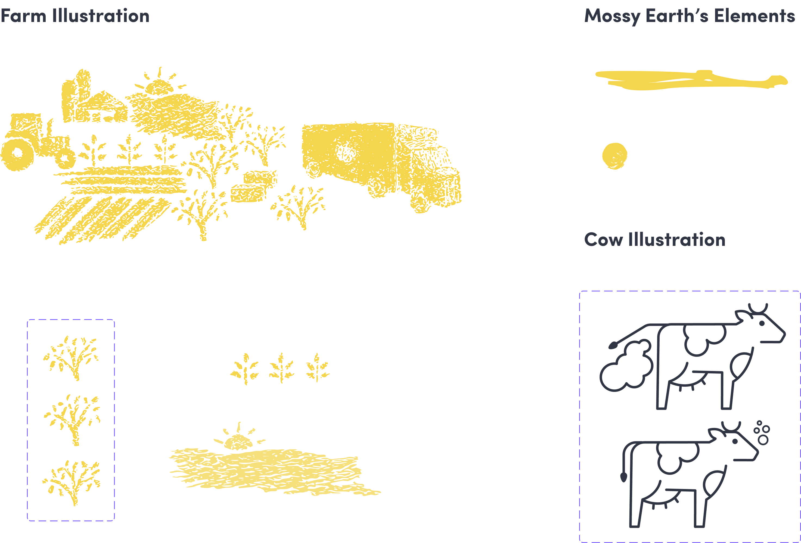
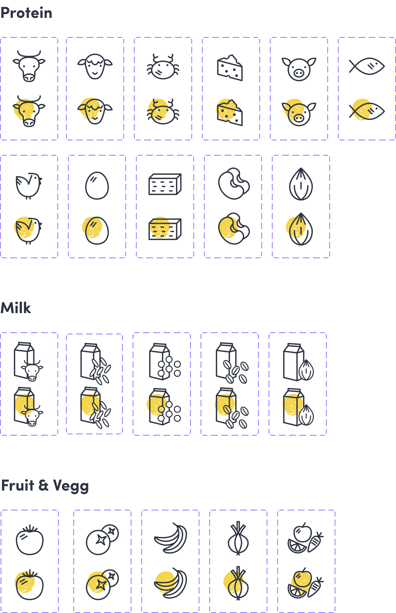
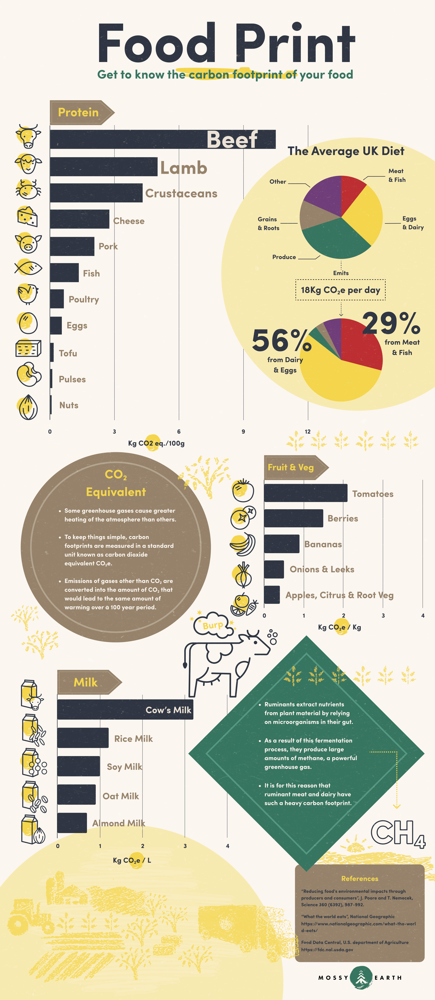

Climate change, biodiversity threats and the impact of diet and lifestyle on the environment are some of the biggest challenges we are facing. The aim of this project was to create awareness around environmental issues and assist the comprehension of Mossy Earth’s educational content.
Environmental | Education
Visual design | Data visualisation | Illustration
June 2021

Mossy Earth is a team dedicated to restoring Nature and fighting climate change. Their projects range from restoring wild ecosystems, planting native trees and aiding in the conservation of endangered species. In addition to the ground work they also share a lot of educational content through a rewilding blog, a podcast and living guides that give insight into the impact of different lifestyles on the environment.
This infographic was developed to complement the lifestyle guides shared on their website. It was done in collaboration with one of Mossy Earth’s conservation biologists. He explained how they were looking for a way of communicating the findings of different studies, on the impact of diet and lifestyle on the environment, in a captivating visual way.

The goal of this project was to bridge the gap between some of the scientific papers that inform Mossy Earth’s efforts and the public. To share the data in a tangible way, spread awareness on personal carbon footprint and help people make more informed decisions on their diets. To support the educational content of the lifestyle guides and to spark interest in their mission. We decided on some elements to include that would best communicate the relevant information:
A comparison between the environmental impact of different foods
Some idea of the impact of different foods within a diet
Information on how this impact was calculated and why it can vary so much
The first elements to influence the layout of the infographic were the bar graphs. We found that this was a good way to show the comparison between the environmental impact of different foods. This was the main point to communicate and everything else would complement these blocks and fill in the gaps.
For the section on the diet we decided to use as an example the average UK diet since Mossy Earth is based in the UK and most of their audience and target audience would most likely have a similar diet in their regions. We wanted to show the diet composition and its respective impact and, after some iteration, we found that a pie chart was the most effective way to communicate this.

We narrowed down what to include in the infographic by considering what would help someone make a change in their diet. Foods were grouped according to their function within the diet, for example, we looked at how would different sources of protein compare or what would be the difference between drinking cow’s milk or a plant based alternative. We wanted the options to feel tangible and to help someone who is looking for opportunities to take action.
A big part of what influenced the visual design of the infographic was Mossy Earth’s well established visual identity. We aimed to communicate in a friendly and informal tone that would be approachable and inviting.
The yellow brushstrokes were one of the key elements of their branding. By using a similar texture on the illustrations I wanted to unify their existing style with new elements. The paper texture over the whole infographic helped to connect the content with their environmental mission.

The icons and illustrations were custom made in order to keep a strong visual unity. The aim was to build everything in a modular way so that any changes would be easily made and the elements could be reused in future work.

After receiving feedback from Mossy Earth’s brand manager we worked on some revisions. The goal was to “clean up” the communication, simplify unnecessary elements or remove them, create a more structured hierarchy of information and highlight key elements. This was very helpful to keep the focus on the content and find solutions that better served the reader.

This project offered many learning experiences. Some notes I took to consider in future projects:
An earlier involvement of the brand manager would have been helpful to have a better alignment with Mossy Earth’s branding and some of the visual design decisions
Include some research to better understand their channels of communication and where the infographic would have the most impact